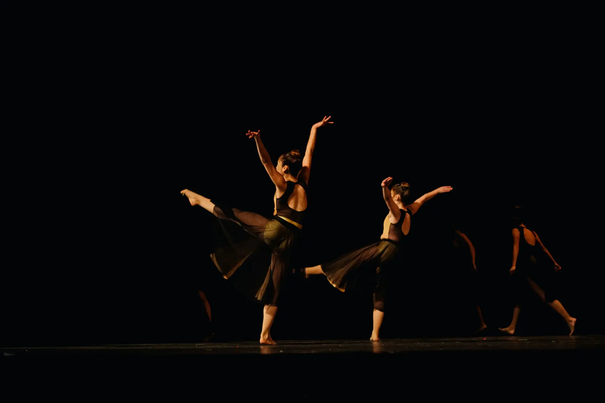
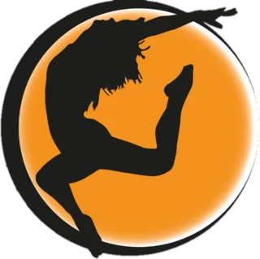
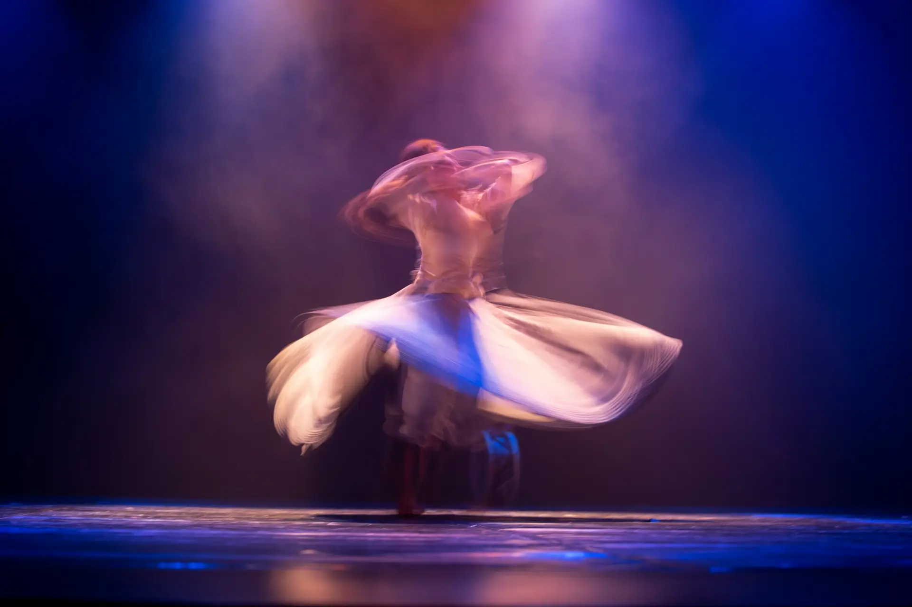
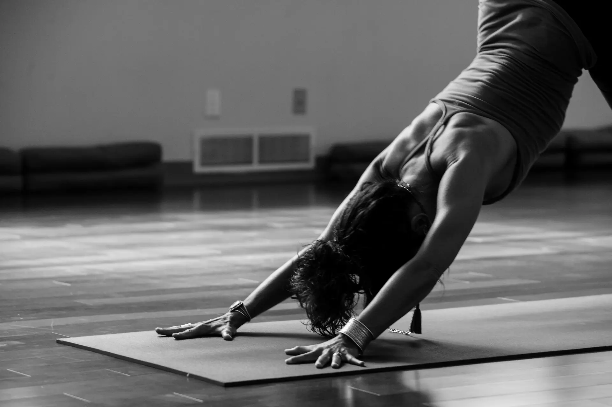
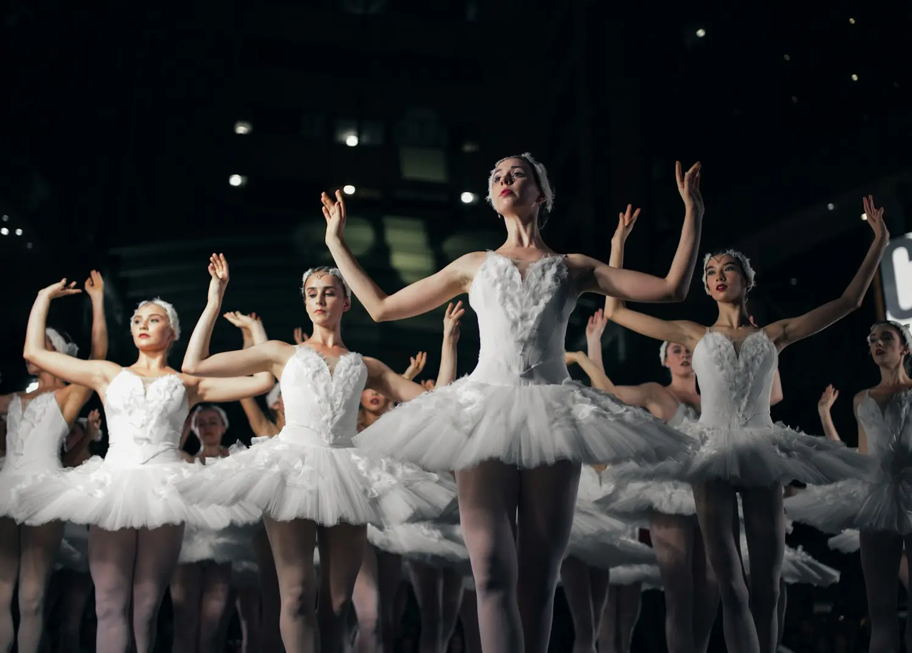
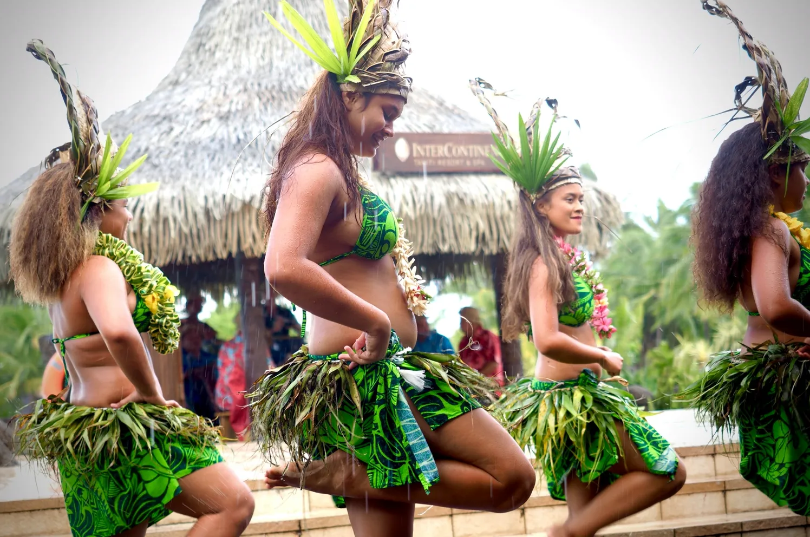

Aca’ Danse

Venez découvrir la passion de la danse.

La danse pour tous les goûts, à tous les âges !
Découvrez notre univers, nos danses et nos cours !
Découvrir les cours !
Une multitude d’activités vous attendent chez Aca’Danse !
Découvrez nos activités bien-être : Pilates, Shiatsu, Fitness et bien plus encore.
Découvrir les cours !

Aca’Danse monte sur scène pour partager sa passion, son énergie et de beaux moments lors de ses galas et festivals !
Des spectacles et des émotions à vivre ensemble pour partager la passion de la danse.
Qui sommes-nous ?
Aca’Danse a été créée lors de sa première assemblée générale, le 29 juin 2011.
Quinze ans que notre association propose, avec l’appui et l’aide de la Ville, près d’une cinquantaine d’activités allant de la « danse » à la « remise en forme », pour un public allant de 2 ans à plus de 85 ans… Toutes ces années de régularité et de présence sur la ville et le territoire, pour 600 adhérents qui continuent à nous suivre et à partager cette même passion.
Aca’Danse, c’est aussi une quinzaine d’intervenants diplômés qui animent au quotidien l’accueil sur nos activités, avec sérieux et compétence, en créant un relationnel de qualité. Notre objectif reste de conjuguer des activités sportives avec le sens artistique en s’appuyant sur la danse. Nos intervenants sollicitent autant la créativité individuelle que collective.
Notre association affirme depuis ses débuts sa quête de lien social, en valorisant une approche tout public, familiale, intergénérationnelle et conviviale, répondant aux valeurs que nous portons tout au long de l’année avec l’équipe associative. Nous revendiquons également une politique tarifaire attractive, dans le seul but de permettre aux personnes de tous les âges et de toute condition de bénéficier d’un accès à des activités sportives et de loisirs de proximité et de qualité.
Enfin, notre équipe s’efforce chaque saison de faire preuve d’inventivité et d’innovation dans les activités proposées à toutes les tranches d’âge. Nous restons à votre service pour « motiver » le plus grand nombre, dans un esprit de loisir et de bien-être.
À bientôt sur nos activités…
Où sommes-nous ?
1 rue Mozart
57310 Guénange
Centre Social Louise Michel
au premier étage